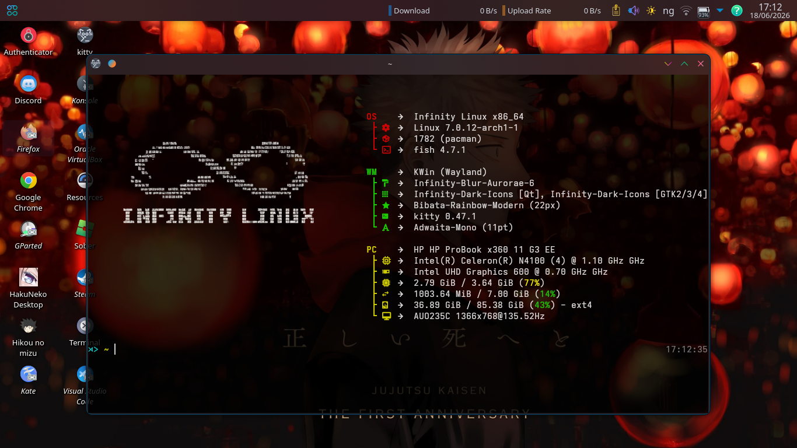

✦
Fast by nature
Arch at its core means fresh software, a lean foundation, and power when you need it.
01Infinity Linux is a clean, capable Arch-based system for people who want their desktop to feel as limitless as their ideas.
Infinity Linux pairs the rolling-release freedom of Arch with a carefully crafted environment that looks sharp from the first boot.

Arch at its core means fresh software, a lean foundation, and power when you need it.
01A thoughtful desktop experience designed to keep you immersed in what matters.
02Explore, customize, and make it yours. Infinity Linux is built in the open.
03Recommended RAM
1 GHz minimum
1080p recommended
Integrated or discrete GPU
A new Wayland-first Infinity experience is in the works.
Getting started is straightforward. Download the ISO, prepare a USB drive, and boot into Infinity Linux.
Get the latest Infinity Linux release from SourceForge.
Flash the ISO to a USB drive with a tool such as Etcher or Ventoy.
Restart, choose the USB device in your boot menu, and follow the installer.
Release notes will appear here with the next published update. Follow development on GitHub ↗.
YOUR NEXT DESKTOP AWAITS
Rolling release notice. Infinity Linux receives regular updates from Arch’s package repositories. Packages are pushed as soon as they are updated, so update regularly and expect a system that keeps moving forward.